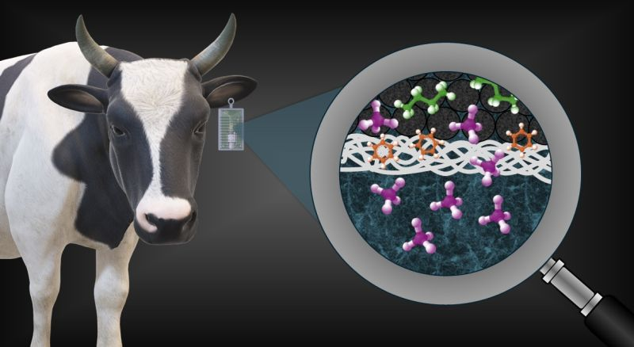
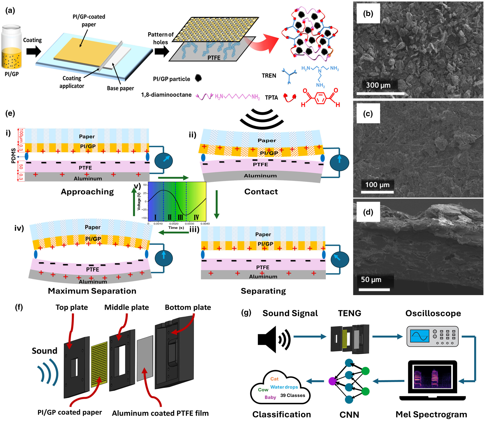
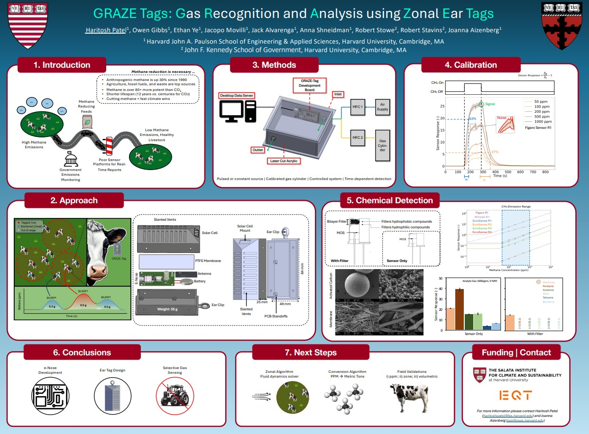

Publications/Posters

Highly Selective Enteric Methane Monitoring Through Modular Sensor-Filter Assembly
A materials-informed electronic nose platform is developed for selective methane detection in complex gas environments relevant to livestock monitoring. Using a dual-layer adsorptive filter and sensor–filter co-design, the system enables accurate, scalable, and non-invasive emission measurement.

Sustainable Live Sound Monitoring and Classification System Enabled by a Triboelectric Nanogenerator and Machine Learning Techniques
DOI: 10.1002/eem2.70044
This work presents a self-powered microphone based on a triboelectric nanogenerator for real-time sound classification. It combines energy harvesting with machine learning to enable efficient, low-power acoustic monitoring.

GRAZE-Tags: Gas Recognition and Analysis using Zonal Ear Tags
H. Patel, O. Gibbs, E. Ye, J. Movilli, J. Alvarenga, A.V. Shneidman, V. Murthy, and J. Aizenberg, et al. “GRAZE-Tags: Gas Recognition and Analysis using Zonal Ear Tags.” Poster, 2025 State of the Science Summit: Reducing Methane from Animal Agriculture. May 19-21, 2025, Davis, California
A wearable sensing system for real-time monitoring of methane emissions from livestock
Third-year BASc student in Nanotechnology Engineering
University of Waterloo
ogibbs@uwaterloo.ca
© 2026 Owen Gibbs